今回は、インフキュリオン社員である三鷹氏による北京旅行記です。もともとは社内向けの報告だったものに手を加えて、インフキュリオン・インサイトの記事にしたものです。
目次
はじめに
2018年6月、北京に一泊二日で行ってきました。現地でウィーチャットペイやその他Fintechサービスを実際に体験してきたので報告します。大学の留学時にウィーチャットの本人確認と銀行口座は登録できていた為、ウィーチャットペイは使える状態でした。そのため、旅行中は極力ウィーチャットペイを使っています。
全体を通した感想：
- 現金がなくても生活可能だが、ウィーチャットペイ・アリペイが使えないと色々不便。現地での携帯電話番号も持っていた方が断然いい！！そして、旅行者にはこのモバイルペイメントアプリと中国で使用できる携帯電話番号の両方がないので、過ごしづらい。
- 中国のキャッシュレス化についていろいろ言われているが、現地では現金で支払いをしている人はまだ一定数はいた。
一日目のはじまり
海南航空の深夜便で羽田空港から北京首都国際空港に到着。
地下鉄とシェア自転車
地下鉄に乗る為にICカード「一卡通」を購入。
「一卡通」は、日本のSuicaのように、地下鉄、バス、自販機で使用可能なカード。NFC仕様。
地下鉄ではQRコード決済も使えたが、アリペイ、京東ペイ（JDpay）、中国工商銀行のアプリしか対応していなかった。非対応であることを知りつつ、試しにウィーチャットペイのQRコードを使ってみたが、当然ながら使えなかった。
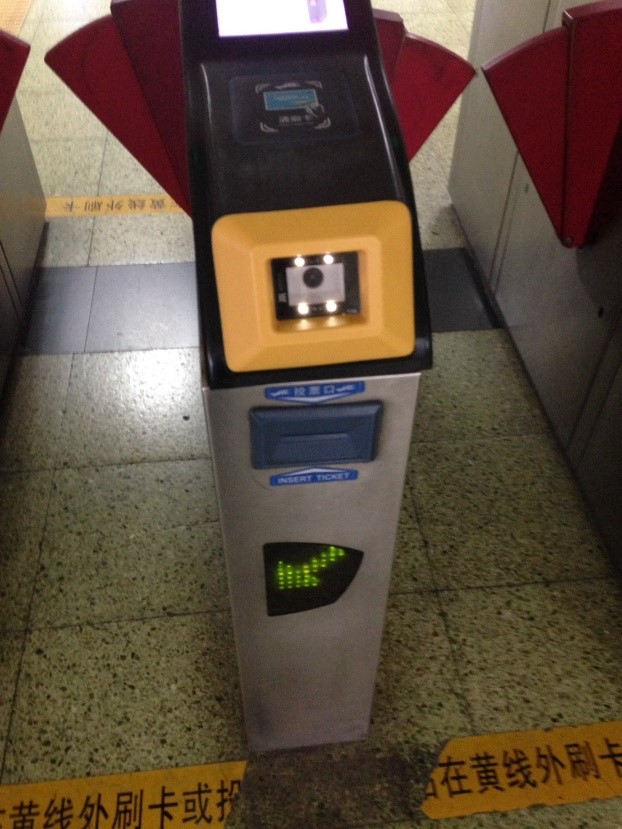
地下鉄のQRコードリーダー
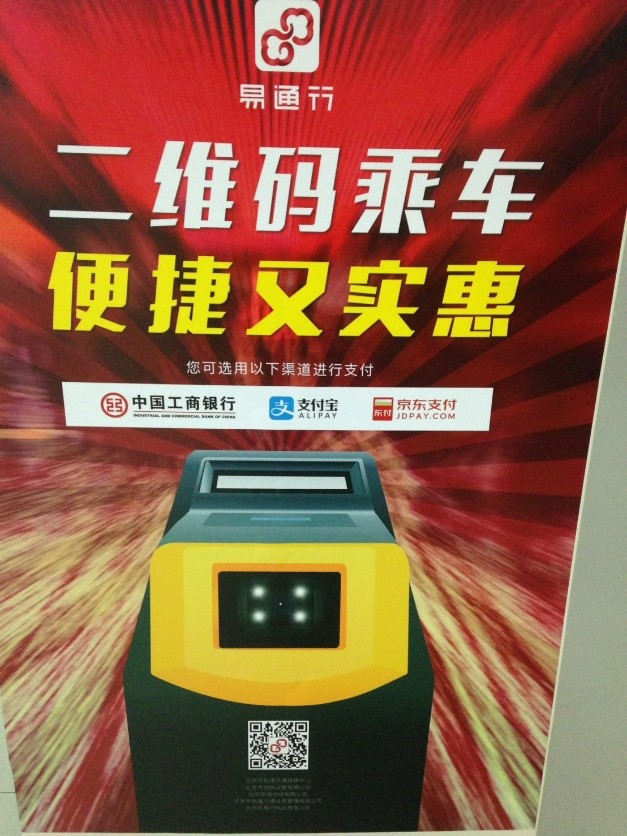
地下鉄でのQRコード決済のポスター
旅行中、何度も地下鉄で移動したが、QRコード決済で乗車している人はほとんど見かけなかった。
地下鉄の出口付近にリアカーで果物を販売しているおばさんがいて、果物と一緒にウィーチャットペイとアリペイのQRコードの札が置いてあった。そして、その周りにofoなどのシェア自転車（シェアサイクル）がたくさん停められていた。
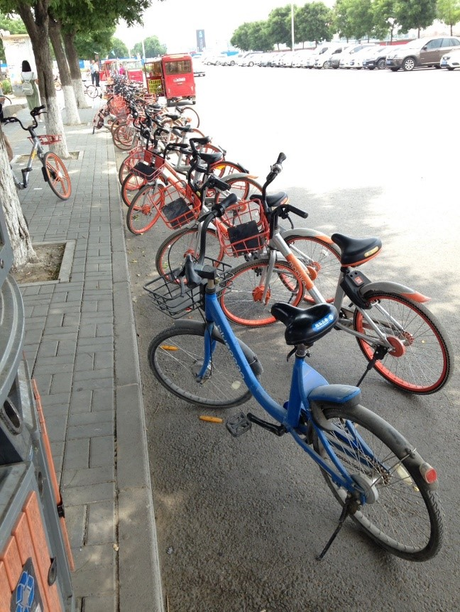
シェア自転車
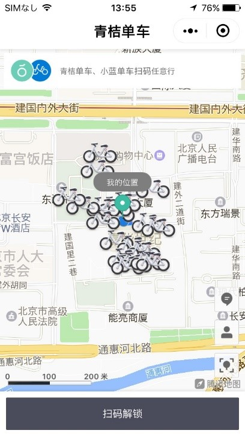
シェア自転車
シェア自転車に埃が被っていたのでここ数日は少なくとも使われていなかっただろう。試しに、自転車のQRコードを読み込んでみたが、事前登録が必要だった。考えてみればデポジットが必要だから当然か～。登録しようとしたが、何と電話番号での認証が必要であるとのことで、困ったことに私は中国の電話番号は持っていない！とりあえず、日本の携帯の電話番号を入力してみたが、「海外の電話番号は対応できない」と登録画面に英語で表示された。諦めるしかなかった。
中国にいる友達に電話番号を借りればよかったと帰国後気づく。
無人書店を目指して
朝7時過ぎという早朝だったが、ホテルではもう部屋に入れるということなのでチェックイン。荷物を置いて、最初の目的地である「無人の書店」に向かう。これは北京国際図書園の敷地内にあるとの情報を事前に得ていた。
バスに乗り、途中で乗り換えること90分ほどで到着。場所はざっくり北京市の東側。しかし、北京国際図書園に着き、無人書店を探すが、見つからない。警備員に聞いても「なんじゃそりゃ、聞いたことねえで（地方の強い訛りのある感じ）」と言われる。困ったな～と思いつつ、気を取り直す。その建物自体は本の卸売り用倉庫なので、そこで立ち読みをした後、次の目的地に移動。
しかし、ここでも問題発生、建物を出たが、郊外過ぎたためタクシーが一台も走っていない。私の周りにあるのは、乗り捨てられたシェア自転車だけ。中国版Uberとも呼ばれる「嘀嘀出行」も、電話番号が必要なため諦める。「百度地图」で近くのバス停を検索すると、運よく3キロ先にバス停を発見。
日本で愛用しているグーグルマップが中国では使えないので、百度（バイドゥ）の地図サービスを使った。
新型スーパー「7fresh」
徒歩でバス停まで行き、バスで最寄りの地下鉄駅へ移動。「一卡通」のおかげでバスも地下鉄もサクサク。向かうは京東（JD.com）が今年の年初にオープンさせた新型スーパー「7fresh」。
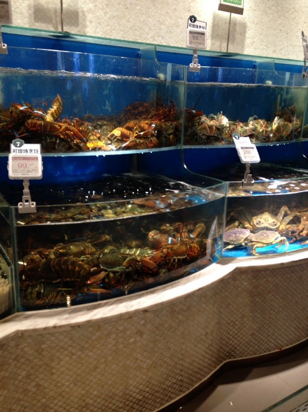
「7fresh」では、その場で買ったものを調理してもらえる。
「7fresh」はアリババの「盒马鲜生」に似たタイプのスーパー。OfflineだけでなくOnlineにも対応していて、例えば半径３㎞以内であればネットで注文すると30分ほどで新鮮な野菜・肉・魚介類でも何でも送り届けてくれる。店内でも色々なものが売られており、その場で購入して調理して食べることもできる。
日本では中々食べられないシャコを500g（17匹ほど）購入し、その場で調理方法を選んで調理してもらった。支払いはもちろんウィーチャットペイ。現金やその他の支払いに関してはそのための専用支払いカウンターがどこかにあるみたいだったが、どこの隅っこだろうか・・・・・。
「7fresh」はJD.comのスーパーなので、使えるのは基本的にウィーチャットペイまたはJDpayのみ。（テンセントは京東に出資している）
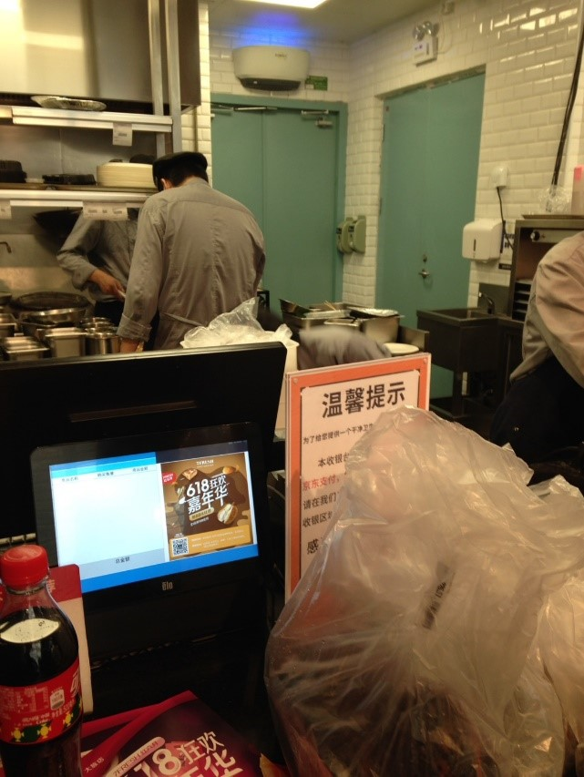
「7fresh」
屋台街での決済は
次に、王府井と呼ばれる、北京市の歩行者天国、食べ歩きスポットに向かった。目的は屋台街の調査。結果は、予想通りすべての店の看板や商品の近くにQRコードがあった。しかし店員の多くは手に現金を持っていた為、現金で支払う人は一定数いると思う。
私の携帯に表示したQRコードを読み込んでもらう「consumer-presented」のQRコード決済は既にコンビニで経験済みなので、ここでは私がお店のQRコードを読み込んで支払う「merchant-presented」のQRコード決済を実践。流れとしては掲示されているQRコードを読み込む⇒スマホに金額入力画面が表示される⇒金額を入力し店員に見せながら支払いボタンを押す⇒支払い完了。後は商品を受け取るというもの。
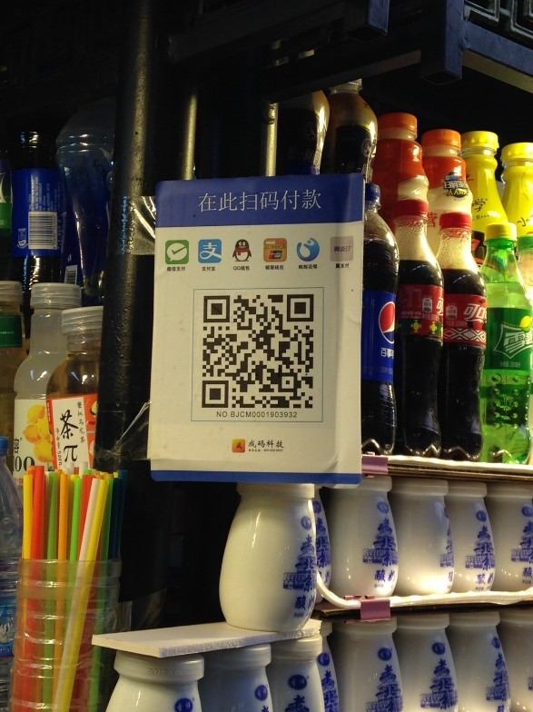
屋台でのQRコード決済
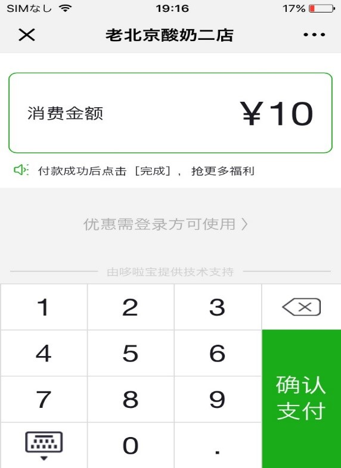
QRコード決済
また、近くの本屋さんに入ると無人レジ（本のバーコードをスキャンし、ウィーチャットペイで支払い）と有人レジが併用されていた。
二日目の朝
朝近くのチェーン店に朝ご飯を食べに出かけた。支払いはもちろんウィーチャットペイ。キッチンのところにたくさんの外卖（ワイマイ、デリバリー）のお兄さん達が列をなしていた。早く届けた方が顧客からの評価が高くなるため、店員を急かしていた。
天安門広場と故宮
朝食の後、天安門広場と故宮に移動。
中国人は全国民が顔写真付きの身分証を保有しているため、セキュリティーゲートでタッチして、荷物検査を行う。外国人はパスポートを提示して係員が目視で確認して通る。そのため、外国人の番になると少し処理に時間がかかった。
天安門をくぐって、故宮の敷地内に入るとまずはチケット売り場を探すが、それっぽいところに人がたくさん並んで・・・・いない！！あれ？前回は行列ができていたが、みんな見飽きたのか！？でも、人はたくさんいるが、どうなっているんだ？
などと思いながら、チケット売り場の近くで大声を出している係員に聞いてみると、「ここはネットでチケットを予約した人専用の窓口で、その他はあっち、あっち」と指をさされた先には、テントみたいなものがある。その周りに人が集まっていた。
近づくとQRコードがテントの柱に貼られていて、みんなスマホでそれを読み取っていた。私もQRコードを読み取ってみると、チケット申し込みページにジャンプ、氏名、身分証番号（外国人はパスポート番号）を入力、最後に電話番号を入力して決済（ウィーチャットでQRコードを読んだので、そのままウィーチャットで決済）。
ここで、皆さんは「あれ、三鷹って電話番号ないんじゃなかったっけ？」と思うかもしれません。ありがとうございます！北京一日目の内容をしっかり読んで頂いているということですね。そうです、電話番号は持っていません！中国も日本に似て、キャリアによって最初の３文字がほぼほぼ決まっているので、最初の３文字だけキャリアの３桁を入力し、残りは思いついた数字を入力した。今回は特に電話番号で認証が必要なわけではなかったため無事にチケットが購入できた。
この後、さらに驚くことが、入場ゲートもほぼ人が並んでいない！！実は先ほどチケットを購入する際に使用した身分証（私はパスポート）がそのままチケットになった。読み取り機があり、身分証を係員に渡して、読み取り機にかざすと、画面に「本日有効なチケット」と表示され、ゲートを通される。そのため、ほんの１，２秒で入場ができてしまう。これなら転売防止と業務の効率化につながる。浦安市の防遊園地でもこれができたら、並ぶ時間が短くなりそう！！
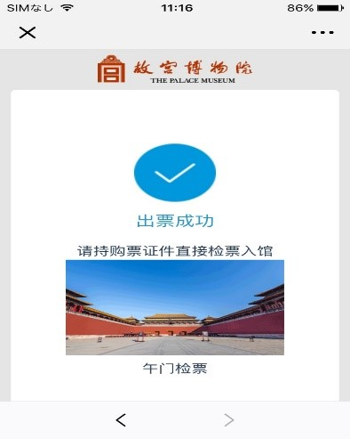
スマホで故宮博物館のチケットを購入
タクシーでのこと
故宮を後にして、ホテルの近くに一旦戻る。ここから、また一苦労が待っていた。家族の希望で「螺蛳粉」と呼ばれるインスタント麺を探し回ることになる。何店舗もスーパーを回り続けること３時間、結局見つけられず。そしてホテルからも遠ざかってしまった。ここでもシェア自転車があればもっと楽だったと思った。
ホテルに戻る為にタクシーを探すが空車のタクシーが全然走っていない。昨日は北京市郊外だったので、しょうがないが、市内でも配車アプリを使わないとなかなか捕まらない。止まっているタクシーに話しかけても、人を待っていると言われる。途方に暮れて歩いていたが、何とか１台捕まえホテルまで送ってもらう。５ｋｍくらいの道のりの為、乗車中運転手はずっと電話越しに「今日は本当に仕事がないよ、今乗ってる人もすぐそこまでしかいないから、まったく、困ったもんだ」と電話で連発。ここで配車アプリでもあれば、文句の一言でも書き込みたい。
空港で見た自販機
新しいものをめぐる旅行はここまでで、あとは空港に向かうが、そこでも面白いものをふたつ発見。
ひとつ目は自動販売機。現金・QRコード決済両方対応。QRコードが現金挿入口の上にあり、読み込むとスマホ上にその自動販売機で販売されている商品の写真付き一覧が表示され、商品を選択し、支払いを済ませると、自販機から商品が出てくる。
日本に帰った後に写真のQRコードを読み込んでみたところ、現地にいた時と同じ画面がしっかり表示された。ということは自販機から遠く離れたところでも、自販機の写真に写ったQRコードを読み取れば商品選択画面に遷移する。そのまま購入手続きを済ませたら、空港の自動販売機から商品が出てくるのかな！？
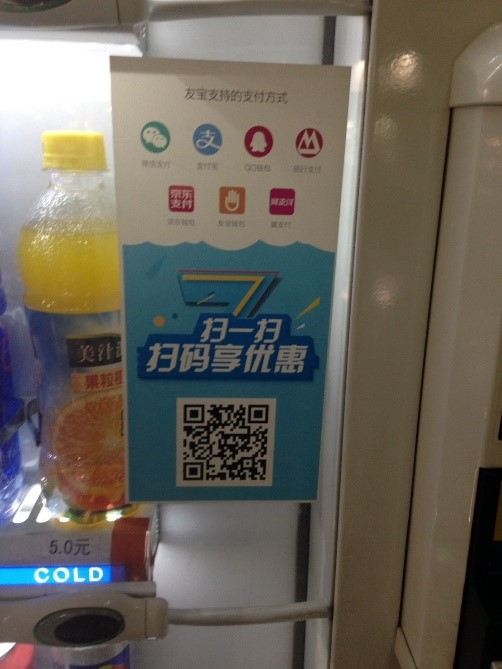
空港の自販機(1)
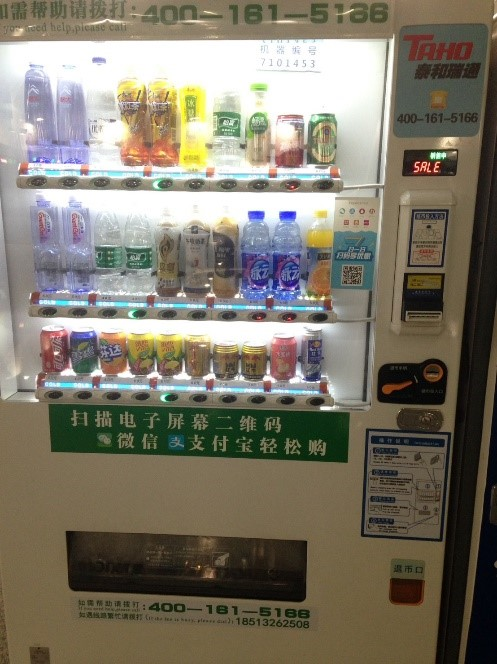
空港の自販機(2)
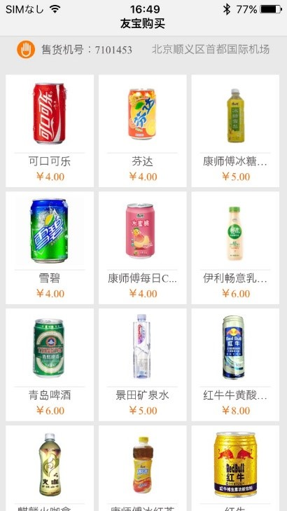
自販機のQRを読み込んだ時にスマホに表示された商品一覧
空港にも「一人カラオケボックス」
ふたつ目は一人カラオケボックス、昔の公衆電話ボックスみたいな形と大きさで、ボックスの中でカラオケが可能。支払はQRコード。空港の待合室に２台設置されていて、２台とも中で歌っている人がいた。
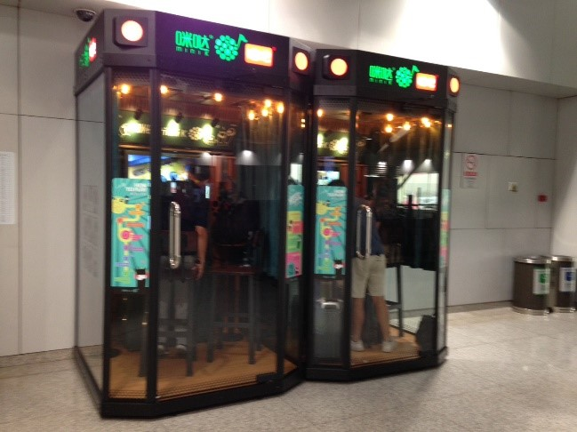
空港にあった一人カラオケボックス
最後に、余談
- 北京市（16,810㎢）は岩手県（15,280㎢）より若干大きい。
- 中心部から少し離れたところであれば２LDK（面積は忘れてしまったがファミリーにとっては十分な大きさ）の区分マンションを380万元（約6,500万円）で購入できます。１日目に訪れた７Freshの道路を挟んだ反対側で地下鉄から徒歩５分！中心部まで地下鉄で約40分弱。
- レストランでも紙のメニューの代わりに、テーブルにQRコードがあり自分のスマホで読み込むとメニューが表示されて、そのまま注文できる所も増えています。